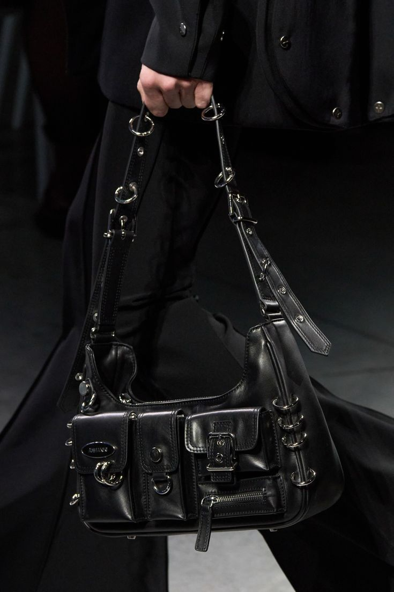

Luxe Élément
Timeless · Iconic · Elegant · Refined
Spotting
Limited EditionSpotting Limited Edition
1. Check the Release Information
Limited edition bags are often released as part of a special collection, collaboration, or anniversary series. Brands usually
announce these releases on their official websites, social media channels, or press releases. Researching the collection and
release date can help you identify whether a bag is truly limited edition. If a bag matches the collection details, such as color,
design, and edition number, it is more likely to be authentic.
2. Look for Unique Design Elements
Limited edition bags often feature distinctive design elements that differentiate them from regular collections. This can include
special colors, patterns, materials, hardware, or embellishments that are not found in standard models. Unique stitching, engraved
logos, or signature motifs are common ways brands make limited edition bags stand out. Paying attention to these details can help
you identify rare pieces.
3. Verify Serial Numbers and Edition Tags
Many limited edition handbags come with a unique serial number, edition tag, or hologram indicating the specific piece within the
collection. This number may also be referenced in official brand documentation or authenticity cards. Checking for these identifiers
and cross-referencing them with the brand’s records or reputable resellers ensures that the bag is part of the limited release and not a
counterfeit or regular edition.
4. Examine Packaging and Accessories
Limited edition bags often come with special packaging, dust bags, boxes, or additional accessories that reflect the exclusivity of
the collection. Original packaging may include edition details, logos, or commemorative designs. If a pre-loved limited edition bag
is missing its original packaging, it may still be authentic, but verifying the accessories can provide additional assurance of its
rarity and value.
5. Buy from Trusted Sources
Finally, always purchase limited edition bags from reliable, verified sources. Authorized boutiques, official brand websites, or
reputable second-hand luxury retailers ensure that the bag is authentic and properly documented. Avoid deals that seem too good to
be true, as counterfeit limited edition bags are unfortunately common. When in doubt, seek expert verification or professional
authentication services before completing a purchase.

